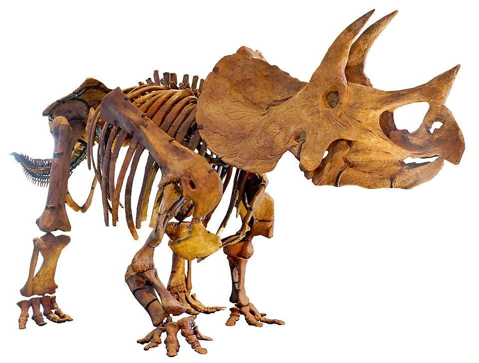
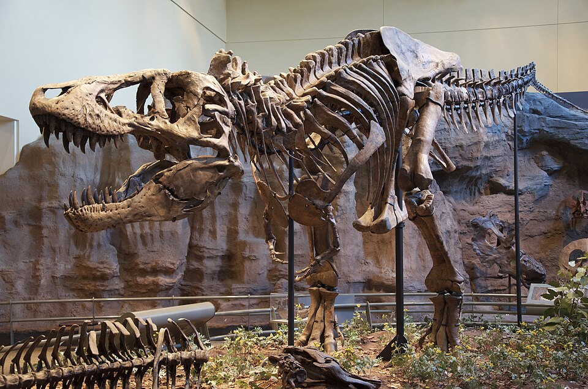
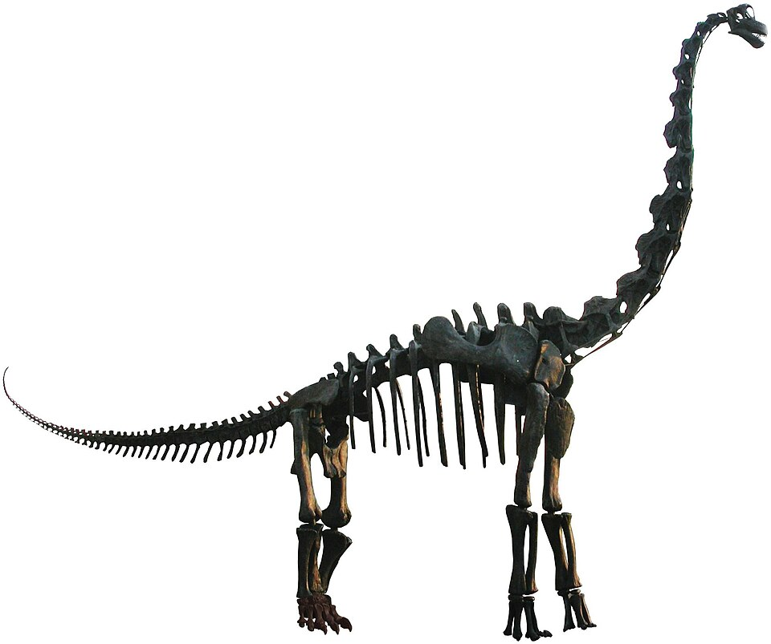
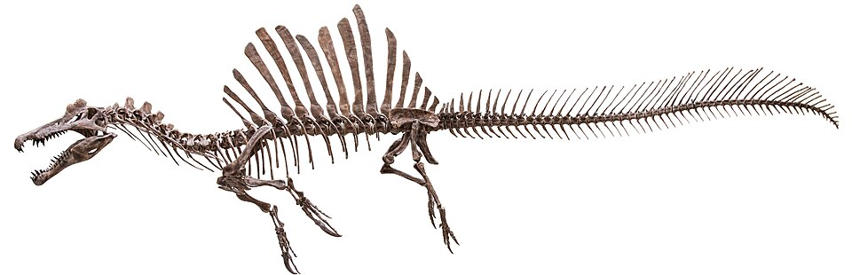

Triceratops adalah genus dinosaurus herbivora berkaki empat yang hidup pada akhir periode Kapur, sekitar 68 hingga 66 juta tahun lalu di wilayah Amerika Utara. Dikenal dengan ciri khas berupa tiga tanduk di bagian wajah dan jubah tulang besar yang melindungi lehernya, spesies ini memiliki panjang tubuh mencapai 9 meter serta bobot hingga 12 ton. Kombinasi tanduk yang kuat dan jubah leher tersebut tidak hanya berfungsi sebagai alat pertahanan diri dari predator seperti Tyrannosaurus rex, tetapi juga digunakan untuk daya tarik saat mencari pasangan serta komunikasi antar sesama Triceratops.
Stegosaurus adalah dinosaurus herbivora dari periode Juraseik Akhir (sekitar 155–150 juta tahun lalu) yang paling mudah dikenali dari dua baris lempeng tulang tegak di sepanjang punggungnya serta empat duri tajam (thagomizer) di ujung ekornya. Dinosaurus yang dapat tumbuh hingga sepanjang 9 meter ini memiliki ciri khas berupa postur tubuh menunduk dengan kaki depan yang lebih pendek, serta ukuran otak yang sangat kecil—hanya sebesar buah kenari—dibandingkan dengan bobot tubuhnya yang mencapai 4 ton. Lempeng tulang di punggungnya berfungsi untuk mengatur suhu tubuh dan menarik perhatian pasangan, sementara duri di ekornya menjadi senjata ampuh untuk bertahan dari serangan predator seperti Allosaurus.
Velociraptor adalah genus dinosaurus karnivora berukuran kecil dari periode Kapur Akhir (sekitar 75–71 juta tahun lalu) yang dikenal sangat lincah dan berburu dengan cerdas. Berbeda dari gambaran di film yang bertubuh besar, dinosaurus ini sebenarnya hanya berukuran sebesar ayam jantan modern dengan panjang sekitar 2 meter dan berat 15 kg, serta tubuhnya diselimuti oleh bulu unggas. Senjata utamanya adalah satu cakar melengkung yang sangat tajam di setiap kaki belakangnya yang digunakan untuk mencengkeram mangsa, serta penglihatan binokular yang tajam untuk berburu di malam hari.

Tyrannosaurus rex (T. rex) adalah dinosaurus karnivora raksasa dari periode Kapur Akhir (sekitar 68–66 juta tahun lalu) yang dikenal sebagai salah satu predator darat terbesar dan paling mematikan sepanjang sejarah bumi. Dinosaurus yang memiliki panjang tubuh sekitar 12 meter dan bobot hingga 8 ton ini terkenal dengan gigitan luar biasa kuat yang sanggup meremukkan tulang mangsanya. Meskipun memiliki dua lengan depan yang sangat kecil, T. rex mengompensasinya dengan tengkorak besar berotot, gigi bergerigi sepanjang 30 cm, serta indra penciuman yang amat tajam untuk melacak keberadaan mangsa dari jarak jauh.

Brachiosaurus adalah genus dinosaurus herbivora raksasa dari periode Juraseik Akhir (sekitar 154–153 juta tahun lalu) yang terkenal dengan postur tubuhnya yang sangat tinggi seperti jerapah. Dinosaurus yang dapat mencapai tinggi 12 meter, panjang 23 meter, dan bobot hingga 58 ton ini memiliki ciri khas unik berupa kaki depan yang lebih panjang daripada kaki belakangnya, serta leher yang terangkat tegak lurus. Adaptasi fisik ini memungkinkannya menyantap daun-daun segar di puncak pohon paling tinggi yang tidak dapat dijangkau oleh dinosaurus herbivora lainnya pada masa itu.

Spinosaurus adalah genus dinosaurus karnivora semi-akuatik raksasa dari periode Kapur Pertengahan (sekitar 99–93 juta tahun lalu) yang dikenal sebagai predator darat terpanjang melebihi T. rex, dengan panjang tubuh mencapai 15 meter. Ciri khas utamanya adalah sirip tulang raksasa di sepanjang punggungnya yang berfungsi untuk mengatur suhu tubuh atau menarik pasangan, serta moncong panjang mirip buaya yang dipenuhi gigi runcing untuk menangkap ikan. Memiliki kaki belakang yang pendek dan ekor tebal berbentuk dayung, dinosaurus berbobot 7 ton ini sangat beradaptasi untuk menghabiskan sebagian besar waktunya berburu di perairan wilayah Afrika Utara.